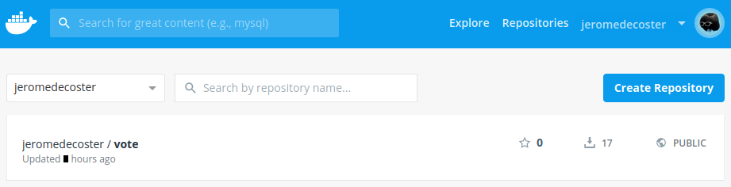
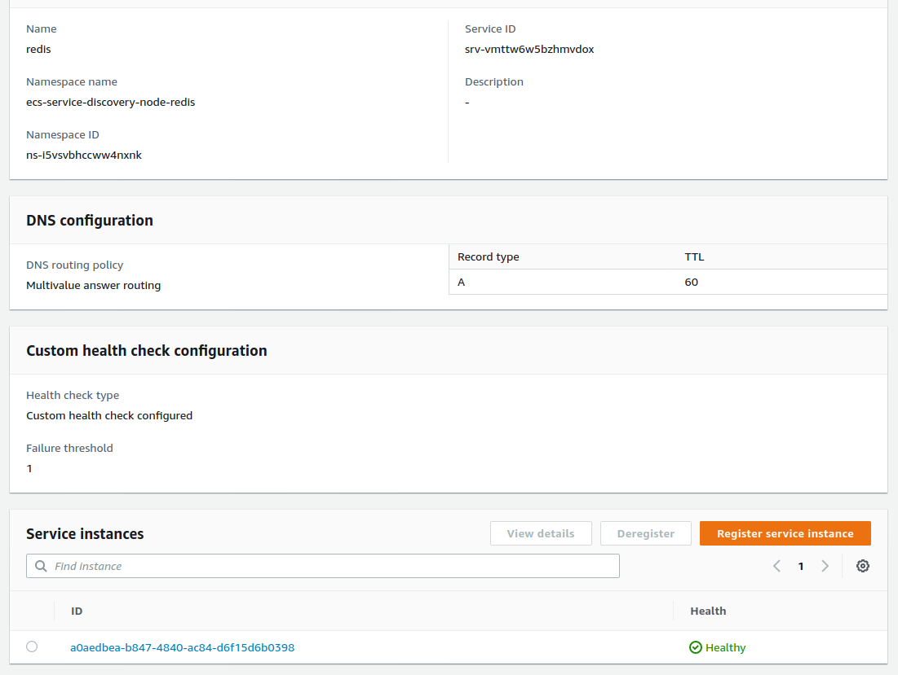

ECS + Service Discovery + Node + Redis
- Use docker-compose to develop our site locally
- We have 2 services linked by a network : a node site and a redis instance
- Create an docker image optimized for production and host it on Docker hub
- Use Terraform to recreate these 2 services on ECS
- Use Service Discovery (Cloud Map) to link the 2 services

Install the project
Get the code from this github repository :
# download the code
$ git clone \
--depth 1 \
https://github.com/jeromedecoster/ecs-service-discovery-node-redis.git \
/tmp/aws
# cd
$ cd /tmp/aws
Run the site locally
Let’s start by seeing the site locally.
The site uses express, ejs and axios.
{
"dependencies": {
"axios": "^0.19.2",
"ejs": "^3.1.3",
"express": "^4.17.1"
}
}
We install the packages :
$ npm install
The Makefile allows you to run the development version :
dev: # local development with docker-compose
docker-compose \
--file docker-compose.dev.yml \
--project-name compose_dev \
up
The development version use a specific docker-compose.dev.yml file :
version: "3"
services:
vote:
build:
context: ./vote
dockerfile: dev/Dockerfile
volumes:
- "./vote:/app"
ports:
- "3000:3000"
- "35729:35729"
networks:
- backend
depends_on:
- redis
redis:
image: redis:alpine
ports:
- "6379:6379"
networks:
- backend
networks:
backend: {}
The vote service also use a specific Dockerfile for the development version :
FROM node:14.3-slim AS build
WORKDIR /app
ADD package.json .
RUN npm install
FROM node:14.3-slim
WORKDIR /app
COPY --from=build /app .
ADD . .
EXPOSE 3000 35729
CMD ["./dev/cmd.sh"]
The node server uses 2 important environment variables :
const PORT = process.env.PORT || 3000
const REDIS_HOST = process.env.REDIS_HOST || 'redis'
// ...
const redis = new Redis({
port: 6379,
host: REDIS_HOST
})
// ...
app.get('/', async (req, res) => {
const url = process.env.NODE_ENV == 'development'
? `http://127.0.0.1:${PORT}/js/metadata.json`
: 'http://169.254.170.2/v2/metadata'
const result = await axios.get(url)
const container = result.data.Containers.find(e => e.Image.includes('tinyproxy') == false)
res.render('index', {
address: container.Networks[0].IPv4Addresses[0]
})
})
// ...
app.listen(PORT, () => {
console.log(`listening on port ${PORT}`)
})
We launch the development version :
$ make dev
It’s a simple voting page. The data are stored in a redis instance.
The development site displays a mock of private IP address : 10.10.10.10.
This address came from the metadata task returned from the special address http://169.254.170.2/v2/metadata.
This is a link-local address.
Hosting the production image on the docker hub
You can modify some variables in the make.sh file to customize your tests :
#
# variables
#
# AWS variables
PROFILE=default
REGION=eu-west-3
DOCKER_IMAGE=jeromedecoster/vote
We build the production image :
$ make build
This command does this :
$ VERSION=$(jq --raw-output '.version' vote/package.json)
$ docker image build \
--file vote/prod/Dockerfile \
--tag $DOCKER_IMAGE:latest \
--tag $DOCKER_IMAGE:$VERSION \
./vote
The production version of the Dockerfile is simple :
FROM softonic/node-prune AS prune
FROM node:14.3-slim AS build
WORKDIR /app
COPY --from=prune /go/bin/node-prune /usr/local/bin/
ADD . .
RUN npm install --only=prod
RUN node-prune
FROM node:14.3-alpine
ENV NODE_ENV production
ENV PORT 5000
WORKDIR /app
COPY --from=build /app .
EXPOSE 5000
CMD ["node", "index.js"]
We push this image to docker hub :
$ make push
This command does this :
$ VERSION=$(jq --raw-output '.version' package.json)
$ docker push $DOCKER_IMAGE:latest
$ docker push $DOCKER_IMAGE:$VERSION

Using Terraform
We will use terraform to build our entire infrastructure on AWS.
Let’s take a look at some excerpts from Terraform files.
Creation of the VPC, subnets, Internet gateway and routing table in vpc.tf :
resource aws_vpc vpc {
cidr_block = "10.0.0.0/16"
enable_dns_hostnames = true
tags = {
Name = local.project_name
}
}
resource aws_subnet subnet_1 {
vpc_id = aws_vpc.vpc.id
cidr_block = "10.0.0.0/24"
availability_zone = "${var.region}a"
tags = {
Name = local.project_name
}
}
# ...
Creation of the load balancer, target group and listener in alb.tf :
resource aws_alb alb {
name = local.project_name
load_balancer_type = "application"
subnets = [aws_subnet.subnet_1.id, aws_subnet.subnet_2.id]
security_groups = [aws_security_group.alb.id]
tags = {
Name = local.project_name
}
}
# ...
Creation of the discovery service in discovery.tf :
resource aws_service_discovery_private_dns_namespace dns_namespace {
name = local.project_name
vpc = aws_vpc.vpc.id
}
resource aws_service_discovery_service redis {
name = "redis"
dns_config {
namespace_id = aws_service_discovery_private_dns_namespace.dns_namespace.id
dns_records {
ttl = 60
type = "A"
}
routing_policy = "MULTIVALUE"
}
health_check_custom_config {
failure_threshold = 1
}
}
Creation of the cluster, the tasks definitions and the services in ecs.tf :
resource aws_ecs_task_definition task_node {
family = "node"
container_definitions = <<DEFINITION
[{
"name": "node",
"image": "jeromedecoster/vote:latest",
"cpu": 0,
"essential": true,
"networkMode": "awsvpc",
"privileged": false,
"readonlyRootFilesystem": false,
"environment": [
{
"name": "REDIS_HOST",
"value": "redis.${local.project_name}"
}
],
"portMappings": [
{
"containerPort": ${local.node_container_port},
"hostPort": ${local.node_container_port}
}
],
"logConfiguration": {
"logDriver": "awslogs",
"options": {
"awslogs-group": "${aws_cloudwatch_log_group.log_group.name}",
"awslogs-region": "${var.region}",
"awslogs-stream-prefix": "node"
}
}
}]
DEFINITION
execution_role_arn = aws_iam_role.ecs_task_execution_role.arn
network_mode = "awsvpc"
requires_compatibilities = ["FARGATE"]
cpu = 256
memory = 512
}
resource aws_ecs_service service_node {
name = "node"
cluster = aws_ecs_cluster.ecs_cluster.id
task_definition = aws_ecs_task_definition.task_node.arn
launch_type = "FARGATE"
desired_count = var.desired_count
scheduling_strategy = "REPLICA"
network_configuration {
subnets = [aws_subnet.subnet_1.id, aws_subnet.subnet_2.id]
security_groups = [aws_security_group.ecs_tasks.id, aws_security_group.alb.id]
assign_public_ip = true
}
service_registries {
registry_arn = aws_service_discovery_service.node.arn
}
load_balancer {
target_group_arn = aws_alb_target_group.alb_target_group.arn
container_name = "node"
container_port = local.node_container_port
}
depends_on = [aws_alb_listener.alb_listener]
}
To initialize Terraform we use this command :
$ make tf-init
To build the infrastructure, the cluster and the services we simply execute command :
$ make tf-apply
We have some information in the terminal :
We use the DNS name URL of the load balancer in our browser :
It works correctly :
We can go to see the logs using the link displayed in our terminal :
Our ECS cluster shows the 2 services that work properly :
Let’s go see the Cloud Map service.
We have 1 namespace created :
By clicking the link, we see the 2 services created :
By clicking on the redis service we arrive on this page :

Let’s see the additions made in Route 53.
We have 1 hosted zone created :
We have 4 record set created.
Note the 2 Type A record set.
A record or Address record (also called Host record) maps a host name or a domain name or a subdomain to a 32-bit IPv4 address distributed over four bytes ex:
10.0.0.102
Service scaling
We go the node service from 1 container to 3 containers :
$ make tf-scale-up
The executed shell code is very simple :
$ export TF_VAR_desired_count=3
$ tf-apply
New tasks are provisioning :
After a few moments, all instances are running :

The target group associated with our load balancer have now 3 healthy instances registered :
And we see our 3 instances – 3 separate IP addresses – behind our load balancer if we reload our browser several times :
We can go back to 1 container :
$ make tf-scale-down
Unregistering targets in the load balancer takes several minutes :
The demonstration is over, we can destroy our resources :
$ make tf-destroy